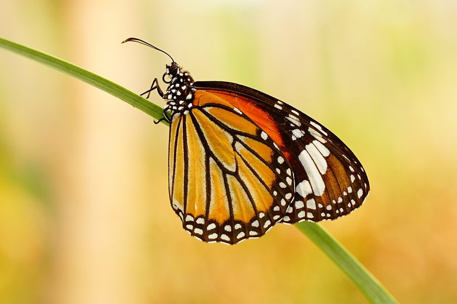

बाघ तितलीStriped Tiger Butterfly
Danaus genutia · Nymphalidae · INS-0010

- Scientific name
- Danaus genutia (Cramer, 1779)
- Family
- Nymphalidae
- Hindi
- बाघ तितली / धारीदार बाघ तितली
- Status here
- native
- IUCN
- not evaluated
When to look कब देखें
Present all year.
बाघ तितली / Striped Tiger Butterfly
Danaus genutia (Cramer, 1779) — Nymphalidae (Danainae)
बाघ तितली — नारंगी और काले की धारियाँ, धीमी और आत्मविश्वास से भरी उड़ान। यह जहरीली है — पर खुद नहीं बनाती यह ज़हर। लार्वा के रूप में यह आक (FLR-0002) के पत्ते खाती है और उसके जहरीले रसायन अपने शरीर में जमा कर लेती है। बड़ी होकर तितली बन जाती है, और वह ज़हर उसकी सुरक्षा करता है — चिड़िया एक बार खाती है, उल्टी होती है, फिर कभी नहीं छूती।
Quick Identification त्वरित पहचान
| Feature | Description |
|---|---|
| Wingspan | 70–95 mm — large butterfly |
| Upperside | Deep orange-tawny with heavy black venation; black border with two rows of white spots |
| Underside | Paler orange; same pattern; white spots in border |
| Body | Black with white spots; abdomen black |
| Flight | Slow, gliding, unhurried — classic aposematic butterfly behaviour |
| Similar species | Plain Tiger (D. chrysippus): orange but WITHOUT heavy black venation — looks plainer |
Field tip: The key distinction from the Plain Tiger (D. chrysippus) — which is also common in eastern UP — is the dense black venation overlying the orange wings, giving the Striped Tiger a "striped" or "veined" appearance rather than a plain orange surface. Both species fly slowly and glide. At Calotropis plants (आक), check for caterpillars: black-yellow-white banded larvae with tentacles at each end.
Morphology आकारिकी
| Feature | Measurement |
|---|---|
| Wingspan | 70–95 mm |
| Forewing length | 38–48 mm |
| Body length | 30–40 mm |
Adult wings: Forewing pointed; hindwing rounded. Upper surface: tawny orange with black venation covering approximately 30–40% of wing surface (much heavier than Plain Tiger). Black border contains two rows of white spots. Costa (leading edge) dark. Underside pattern mirrors upper but paler.
Body: Head and thorax black with white spots. Abdomen black. Males have a distinctive scent patch (androconial patch) on the hindwing — a dark oval spot near cell end, visible on close inspection.
Antennae: Clubbed, black — typical Lepidoptera.
Caterpillar: Distinctive and large (up to 5 cm). Body cream-white with transverse black bands and yellow/orange spots. Two pairs of long fleshy filaments ("tentacles") — one pair near head, one near tail. These filaments are sensory organs and warning signals. Found exclusively on Calotropis (आक) leaves.
Pupa: Bright green with metallic gold spots — suspended from a silken pad, cryptic against vegetation.
Ecological Role पारिस्थितिक भूमिका
Calotropis specialist — the cardenolide connection: The Striped Tiger is a specialist on Calotropis (आक, FLR-0002) as its larval host plant. This creates a direct ecological link:
- Larval feeding: Caterpillars feed exclusively on Calotropis gigantea and C. procera leaves. They are immune to the milky toxic latex (containing cardenolide glycosides — cardiac glycosides similar to digitalis).
- Toxin sequestration: The cardenolides are absorbed from Calotropis and stored in the caterpillar's body — intact through pupation into the adult butterfly. Adult butterflies contain significant concentrations of cardenolides in their wings and body fluids.
- Aposematism: The orange-black-white warning colours advertise toxicity. Birds that eat a Striped Tiger become nauseated and vomit — a memorable experience that conditions avoidance.
- Müllerian mimicry: The Striped Tiger, Plain Tiger (D. chrysippus), Blue Tiger (Tirumala limniace), and Glassy Tiger (Parantica aglea) all share similar orange-black patterns. In Müllerian mimicry ALL the species are toxic — they share the warning signal to collectively educate predators with fewer individual losses.
Pollinator: Adults feed on nectar from a wide range of flowers — Lantana (FLR-0007), Calotropis (their own host plant), and various composites. They are legitimate pollinators for these plants.
Seasonal migration: In India, Striped Tigers make seasonal mass movements — largely altitudinal (descending from hills to plains in winter) and sometimes latitudinal. Aggregations of hundreds to thousands can move together along ridgelines or river valleys. Eastern UP may see passage of aggregations moving through the Gangetic plain in October–November.
Life Cycle / Phenology जीवन चक्र
| Stage | Duration | Notes |
|---|---|---|
| Egg | 3–4 days | Laid singly on Calotropis leaf underside; pale yellow |
| Larva | 14–21 days | 5 instars; final instar 4–5 cm; feeds voraciously on Calotropis |
| Pupa | 9–14 days | Green with gold spots; suspended from silk pad |
| Adult | 2–6 weeks | Multiple broods year-round; longer-lived than most butterflies |
Continuous brooding: Multiple overlapping generations year-round in warm conditions. Slows in cold months (December–January) but rarely stops completely in eastern UP's relatively mild winters. Peak adult abundance: September–November (post-monsoon) and March–May (pre-monsoon).
Egg laying: Female carefully selects young Calotropis leaves for oviposition — lays one egg at a time on the underside of a leaf. Can be observed hovering and touching leaf surfaces with abdomen.
Agricultural / Human Relevance कृषि एवं मानव उपयोग
No crop pest status: The Striped Tiger feeds exclusively on Calotropis (a weed, not a crop) as larva — it poses zero threat to agricultural crops. Adults are pollinators.
Calotropis control agent: In areas where Calotropis (आक) is considered a problem weed (it is toxic to livestock and invades grazing land), the Striped Tiger caterpillar is a natural defoliator that reduces Calotropis vigour. Heavy caterpillar infestations can defoliate entire Calotropis patches.
Bioindicator of Calotropis health: The presence of Striped Tiger caterpillars is a direct indicator that the local Calotropis population is healthy and toxin-producing. Calotropis plants under herbicide or drought stress produce fewer cardenolides — and fewer Striped Tiger larvae are found on stressed plants.
Migration spectacle: Mass movements of Striped Tigers (hundreds of individuals moving in the same direction) are a remarkable natural spectacle, occasionally reported in the Indo-Gangetic plain in October–November. Worth documenting if observed.
Expected Locally स्थानीय रूप से अपेक्षित
Not a field record. Written from published accounts for eastern Uttar Pradesh. No confirmed local sighting yet — if you have seen it, that is what the atlas needs.
अभी तक स्थानीय पुष्टि नहीं। यह विवरण प्रकाशित स्रोतों से है, किसी अवलोकन से नहीं।
The Striped Tiger is common on Calotropis plants along roadsides in Basti district — caterpillars are present most of the year. Adults regularly visit Lantana (FLR-0007) flowers and can be easily observed and photographed at Lantana bushes. The slow, gliding flight along roadsides and field edges makes this species very approachable for close observation. Seasonal mass movements have not yet been formally recorded in Basti district — October–November observations are encouraged.
Distribution वितरण
Global range: Widespread across South Asia, Southeast Asia, southern China, and Australia. Range extends from India and Sri Lanka east through Myanmar, Thailand, and the Indonesian archipelago to Australia.
In India: Distributed throughout the country from the plains to elevations of approximately 2,400 m in the Himalayas. Common in peninsular and northern India; the nominate subspecies D. genutia genutia occurs throughout the Indian subcontinent.
In Uttar Pradesh: Found across all districts of UP wherever Calotropis grows — which is essentially throughout the state along roadsides, wastelands, and canal banks.
In Basti district / eastern UP: Abundant wherever Calotropis is present. Adults common at Lantana flowers. Post-monsoon abundance is particularly high (September–November).
Range notes: Distribution directly mirrors Calotropis occurrence.
Research Questions शोध प्रश्न
- Do Striped Tiger aggregations (mass movements) pass through eastern UP — if so, when, in what numbers, and along what routes?
- What is the cardenolide concentration in Calotropis gigantea plants in Basti district — and does it vary by season or soil type?
- Is Danaus genutia the only Calotropis-specialist butterfly in Basti district — or do Danaus chrysippus and other Danainae also use it as a larval host?
- What fraction of Striped Tiger adults are encountered at Lantana flowers vs. Calotropis flowers vs. other flowers — quantifying pollination contribution?
- Do birds in Basti district show conditioned avoidance of Striped Tiger — and can this be demonstrated by offering prey models?
Similar Species मिलती-जुलती प्रजातियाँ
| Species | How to distinguish |
|---|---|
| Danaus chrysippus (Plain Tiger) | Orange without heavy black venation — looks "plain" not striped; very common in eastern UP |
| Tirumala limniace (Blue Tiger) | Blue-black with pale spots — no orange; larger |
| Parantica aglea (Glassy Tiger) | Semi-transparent wings; dark brown with pale patches; no orange |
| Papilio demoleus (Lime Butterfly, INS-0004) | Yellow-black; much faster flight; completely different pattern |
Taxonomy & Classification वर्गीकरण
Original description. Danaus genutia was described by Pieter Cramer in 1779 in De Uitlandsche Kapellen (The Foreign Butterflies), Vol. 3, plate 235, figure C. The original description was as Papilio genutia. It was subsequently transferred to the genus Danaus Kluk, 1802.
Subspecies. Several subspecies are recognised across the wide range:
| Subspecies | Authority | Range |
|---|---|---|
| D. genutia genutia | (Cramer, 1779) | Indian subcontinent (the form present in UP) |
| D. genutia conspicua | Butler, 1866 | Sri Lanka |
| D. genutia intensa | Moore, 1883 | Myanmar, Thailand |
| D. genutia alexis | Waterhouse & Lyell, 1914 | Northern Australia |
Family and order placement. Belongs to the order Lepidoptera, family Nymphalidae, subfamily Danainae (the "milkweed butterflies"). The subfamily Danainae contains about 500 species, all characterised by toxin sequestration from larval host plants and aposematic coloration. The genus Danaus contains about 12 species, including the famous Monarch Butterfly (D. plexippus) of North America.
Phylogenetic notes. Molecular phylogenetics confirms that Danaus genutia belongs to a clade of Old World Danainae (tiger butterflies) that radiated across Asia and Australia. The cardenolide-sequestration system is ancestral in Danainae, shared with the Monarch and related species. Müllerian mimicry among the Indian "tiger butterflies" (Striped Tiger, Plain Tiger, Blue Tiger, Glassy Tiger) is well-supported by both morphological similarity and shared toxicity.
IUCN status rationale. This species has not been formally assessed by the IUCN Red List. As a widespread species with continuous broods year-round and a larval host plant (Calotropis) that is itself a successful weed throughout its range, the Striped Tiger is not considered of conservation concern.
Photo Gallery फ़ोटो गैलरी
Atlas Connections संबंधित प्रजातियाँ
- FLR-0002 Calotropis / आक — obligate larval host plant; the Calotropis-Danaus relationship is a keystone interaction in this atlas
- FLR-0007 Lantana — primary adult nectar source; pollinator interaction
- INS-0004 Lime Butterfly — shares roadside and garden habitat; different host plant; both Lepidoptera
- BRD-0005 Black Drongo — one of few birds that will occasionally attempt to eat Danainae despite toxicity
References सन्दर्भ
- Cramer, P. (1779). De Uitlandsche Kapellen, Vol. 3. Amsterdam.
- Wynter-Blyth, M.A. (1957). Butterflies of the Indian Region. Bombay Natural History Society, Bombay.
- Kunte, K. (2000). Butterflies of Peninsular India. Universities Press, Hyderabad.
- Ackery, P.R. & Vane-Wright, R.I. (1984). Milkweed Butterflies: their Cladistics and Biology. British Museum (Natural History), London.
- Petschenka, G. & Agrawal, A.A. (2015). How herbivores coopt plant defenses: natural selection, specialization, and sequestration. Current Opinion in Insect Science, 9: 66–71.
- GBIF Occurrence Data — Danaus genutia, India (2026). GBIF taxon key: 1890356.
Source file: species/fauna/insects/striped_tiger_butterfly.md